Technical Help, Queries & Support
For any assistance related to this module, customization or Odoo development.
Locker Management provides configuration options to control locker visualization and renewal-related settings from the General Settings.
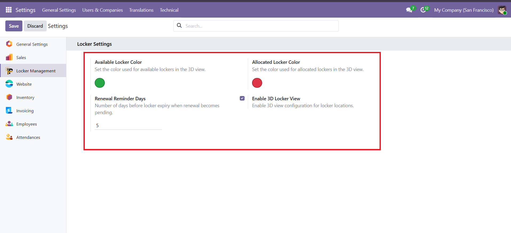
Defines the color used to represent available lockers in the 3D locker view.
Defines the color used to represent allocated lockers in the 3D locker view.
Specifies the number of days before locker expiry when the renewal becomes pending.
Enables the 3D locker configuration and visualization for locker locations.
Locker Profiles can be managed from the Configuration menu under Locker Profiles.
Go to Configuration → Locker Profiles to view and manage locker profiles.
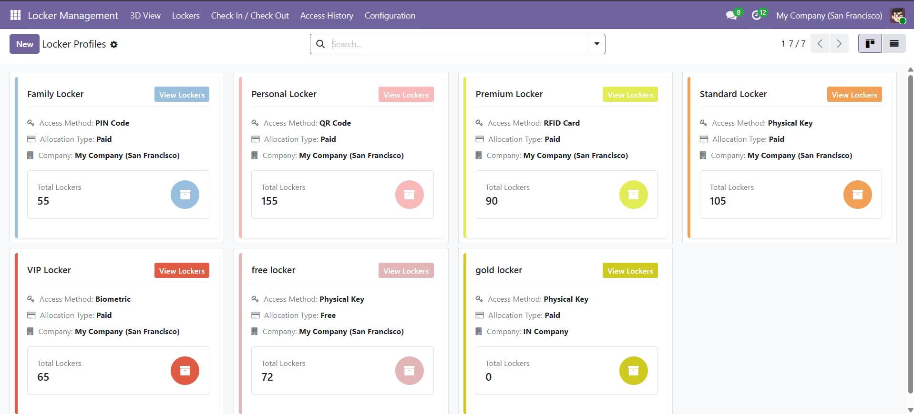
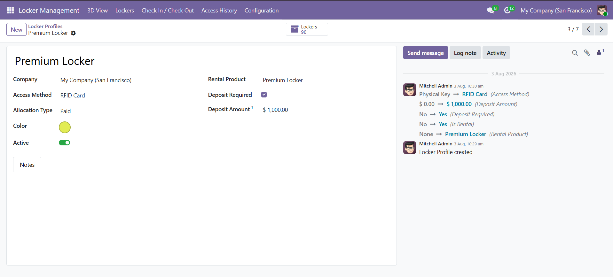
Locker Locations are used to organize and manage lockers according to their physical location. Each location includes company information, a responsible person, locker capacity, and locker type configuration.
Go to Lockers → Locker Locations to create and manage locker locations. Use Generate Lockers to automatically generate the required number of lockers for the selected location based on the configured locker types and layout.
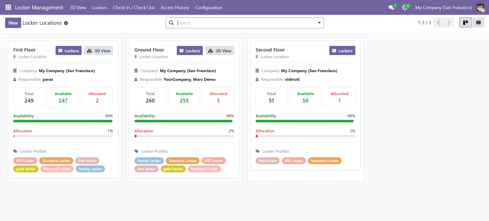
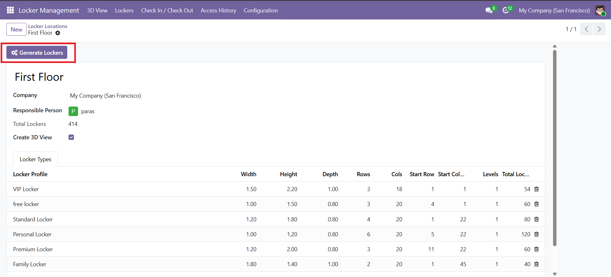
The Lockers menu provides a centralized view of all lockers, grouped by their current status. It allows users to quickly identify allocated and available lockers and manage individual locker records.
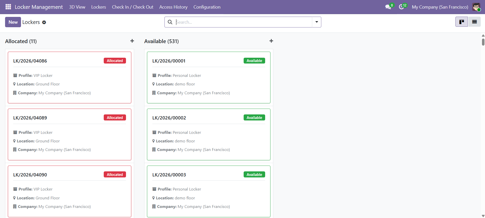
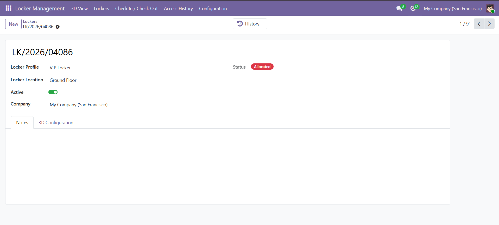
Allocated lockers are identified with a red status indicator and display their locker number, profile, location, and company details.
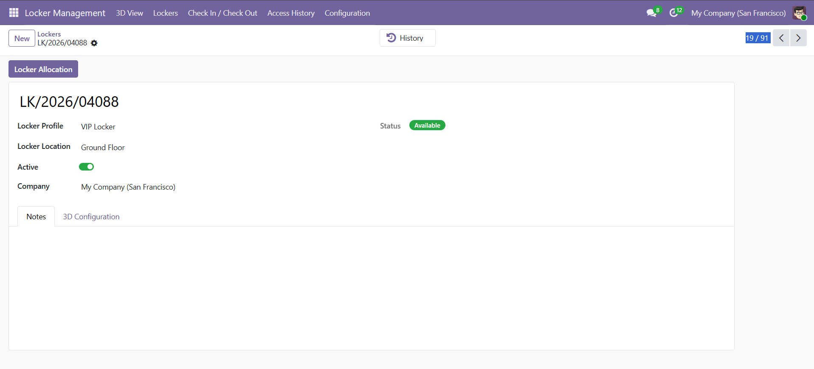
Available lockers are identified with a green status indicator and can be selected for a new locker allocation.
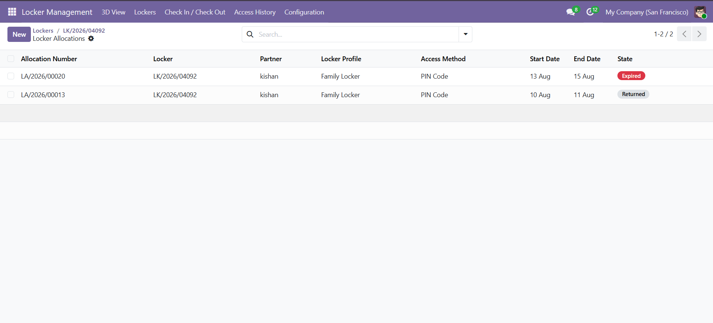
The History button provides access to the activity history of the selected locker, allowing users to review previous locker activities.
The Return Locker feature allows users to return an allocated locker and make it available again for future allocation. Return reasons can be configured in the Return Reasons configuration menu and are available to the user during the return process.
Return Reasons: Configure the required return reasons from the Return Reasons configuration menu. These configured reasons are displayed to the user when returning an allocated locker.
Return Flow: Configure Return Reasons → Open Allocation → Click Return → Select Reason → Confirm Return → Locker becomes Available
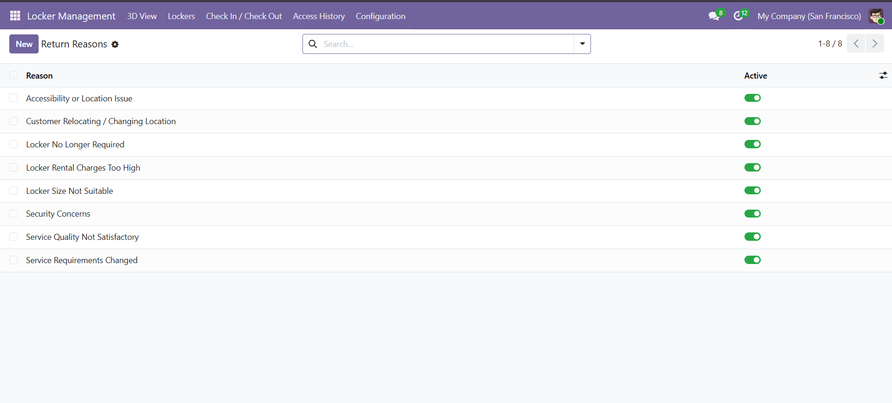
Return reasons are managed from the Return Reasons configuration menu. Administrators can maintain the reasons that should be available when a locker is returned.
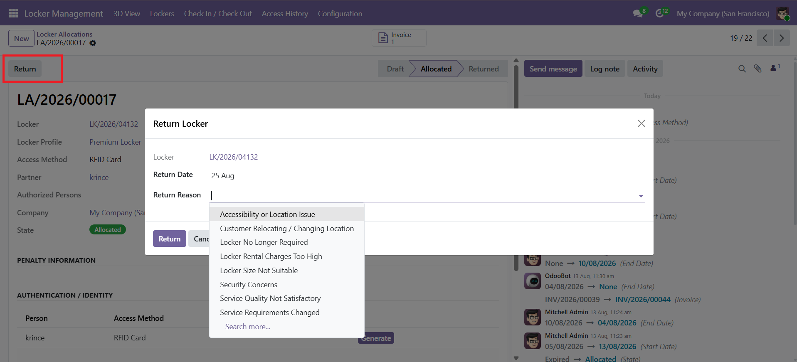
From an allocated locker allocation, click the Return button. The return dialog displays the return reasons configured in the Return Reasons menu. Select the appropriate reason and confirm the return.
After Return: Once the return is confirmed, the locker is no longer allocated and its status automatically changes to Available. The locker can then be allocated again when required.
Locker Penalty is used to manage penalties for lockers that remain allocated beyond their allowed end date. The system checks the configured penalty period and provides an option to create the penalty once the required penalty time has elapsed.
Penalty Flow: Locker Allocation → State becomes Expired → System checks the configured penalty period → Penalty becomes available → Click Create Penalty → Penalty is created → Invoice is generated.
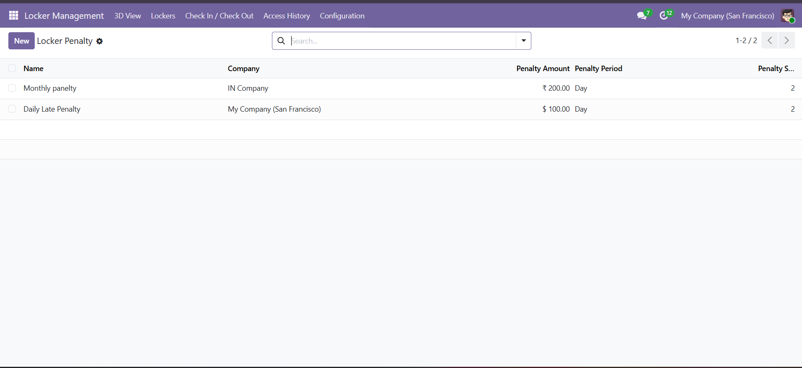
Configure the penalty amount and penalty period from the Locker Penalty configuration.
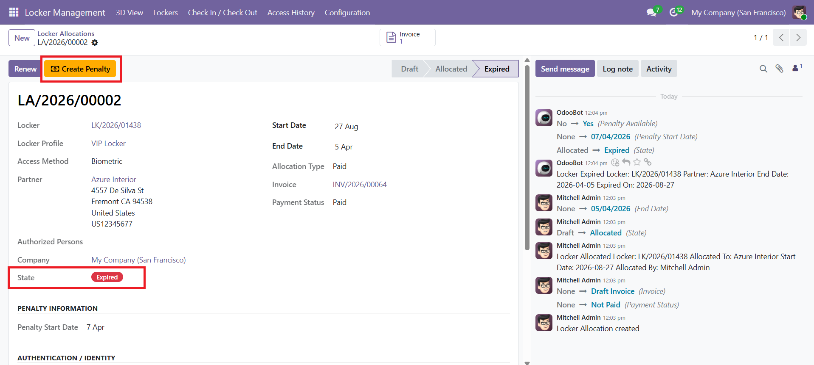
After the locker allocation becomes Expired, the system checks the configured penalty period. Once the required duration has passed, the Create Penalty option is available.
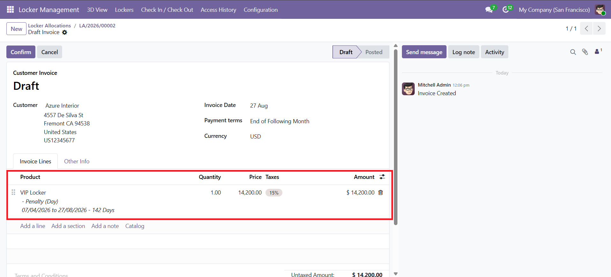
When the penalty is created, the system generates the corresponding penalty invoice.
Important: The penalty option appears only after the allocation is Expired and the configured penalty duration has elapsed. Creating the penalty automatically creates the related invoice.
The 3D View provides an interactive visual representation of the configured locker layout. Locker locations can contain multiple sites, and each site uses its configured dimensions and X/Y/Z position to determine where its lockers are displayed. The 3D view also provides status and locker type visualization, search, filtering, editing, drag-and-drop repositioning, and layout saving.
3D View Flow: Configure Locker Location → Add and Position Sites → Configure Locker Types → Generate All Lockers → Open 3D View → Filter / Search / Edit → Drag and Drop → Save Layout
Multiple Site Layout: The layout is not limited to four sites. Any number of active sites can be configured for a locker location. Site dimensions and X/Y/Z positions determine the placement of each locker group, allowing different groups to be arranged horizontally or vertically according to their configured position.
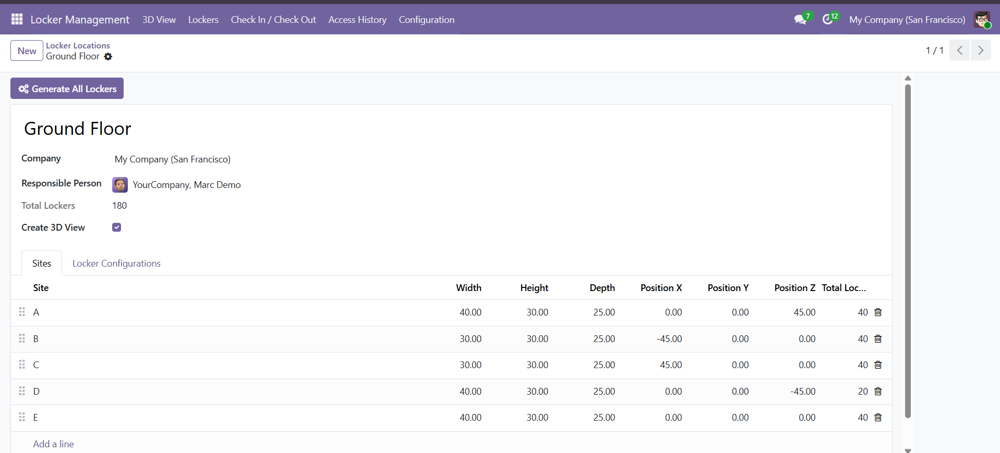
Enable Create 3D View for the locker location. Add the required sites and define each site's width, height, depth, and X/Y/Z position. Locker configurations are then assigned to the required sites to define the locker layout and quantity.
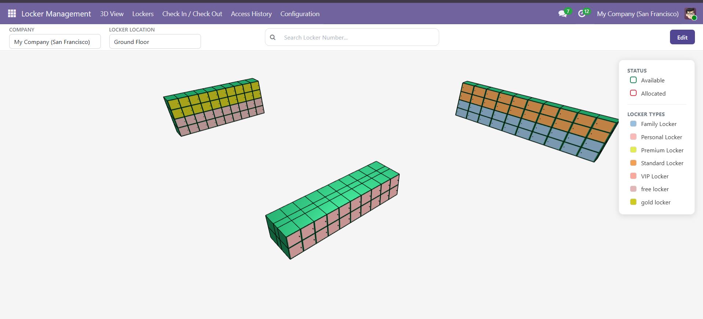
Click Generate All Lockers after the site and locker configurations are ready. The system generates the lockers from the configured data and displays them in the 3D View according to their site positions and layout.
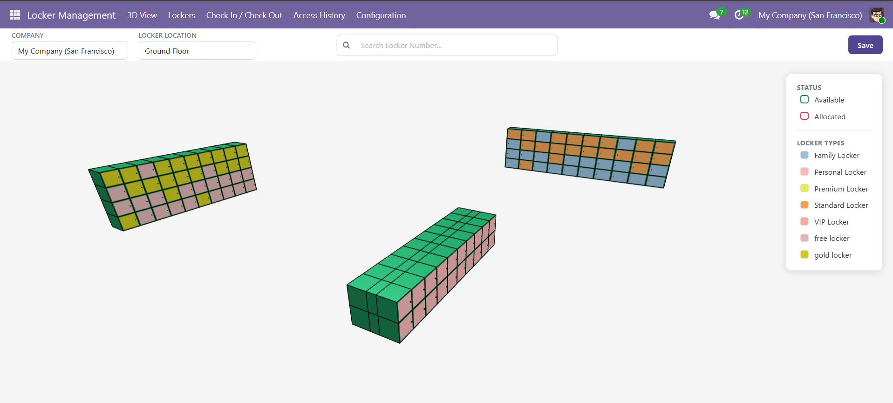
Click Edit to enable layout editing. Lockers can be moved using drag and drop. Position changes remain in memory while editing and are not written to the database until Save is clicked.
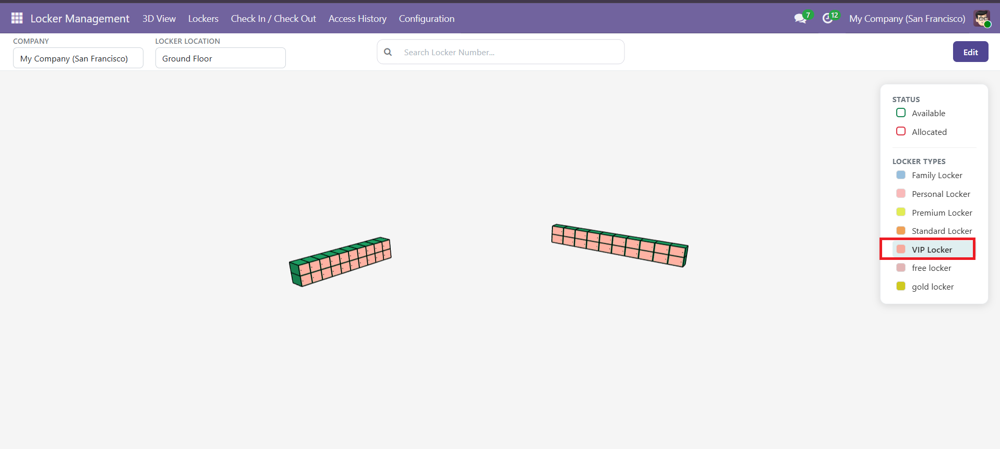
Use the Locker Types panel to display only lockers belonging to a selected locker profile. This makes it easier to inspect a particular locker type within a large 3D layout.
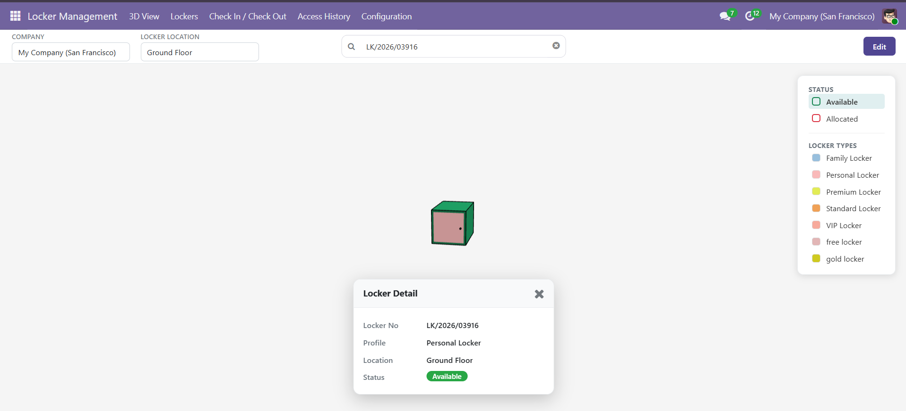
Enter a locker number in the Search Locker Number field to quickly locate a specific locker. The 3D scene is filtered to the matching locker so it can be reviewed immediately.
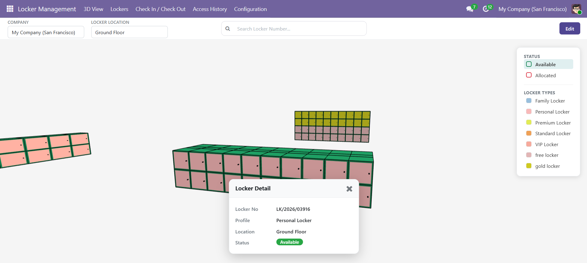
Clicking a locker opens the Locker Detail popup. The popup shows the locker number, profile, location, and current status directly from the 3D view.
✓ Site-based positioning: Locker groups are placed using the configured site dimensions and X/Y/Z positions.
✓ Visual identification: The locker body represents status, the door represents locker profile color, and the locker border remains black.
✓ Filtering: Locker type and status filters help users focus on the required lockers.
✓ Search: A locker number can be searched directly from the top search field.
✓ Edit and Save: Drag-and-drop changes stay pending until the user clicks Save.
Locker Management provides secure authentication based on the Access Method configured for each locker profile. Each locker profile is assigned a specific access method, which determines how the allocated partner or an authorized person can authenticate before accessing the locker.
The available authentication methods include PIN Code, QR Code, RFID Card, Biometric / Face Recognition, and Physical Key.
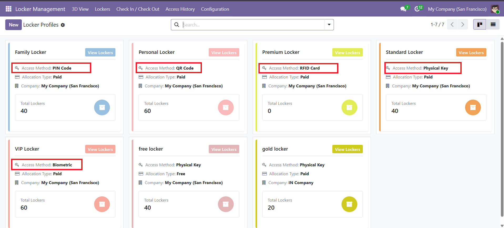
Each locker profile is configured with its own access method, which is used during the authentication process.
Locker Profile → Access Method → Locker Allocation → Partner / Authorized Person → Authentication → Check In / Check Out
For security, the system allows a maximum of 3 incorrect PIN attempts. If the entered PIN is incorrect, the system displays the number of remaining attempts. After the third failed attempt, the user is temporarily restricted from further PIN authentication.
When an incorrect PIN is entered, the system shows the remaining attempts and allows the user to try again.
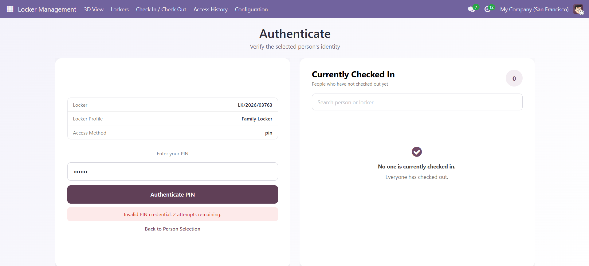
After 3 incorrect PIN attempts, further attempts are temporarily restricted. The user can try again after the displayed cooldown period.
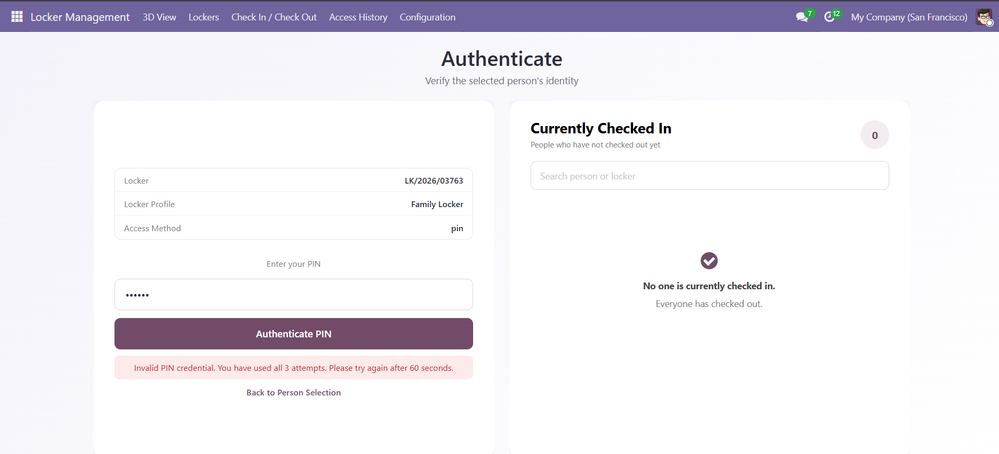
Every successful locker access is recorded in Access History. The history provides a record of the allocation partner, authenticated person, locker allocation, locker, locker profile, access method, Check In time, Check Out time, and current access status.
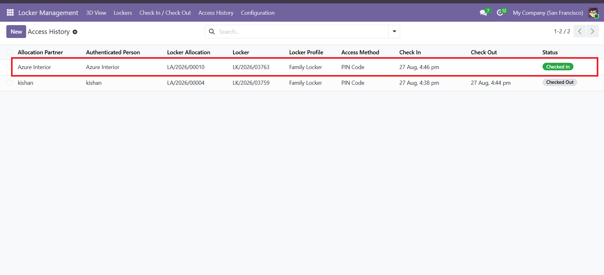
For any assistance related to this module, customization or Odoo development.